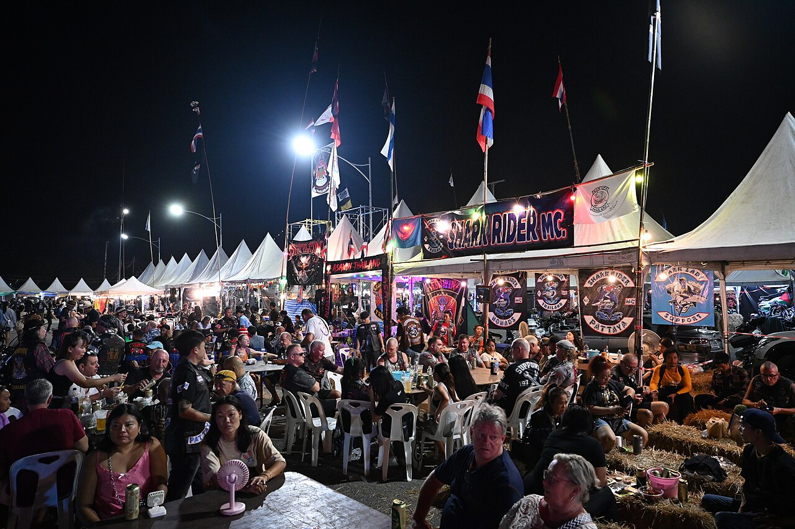

People & Partners
This work
happens
because of
people.
Neighbors, partners, advocates, volunteers, and supporters who show up,
speak up, and build Southeast Queens with us.
▶
Hear what
showing up
sounds like
171 Community Donors
Angela G.Aaron O.Blaire O.Althea M.Andre L.Angelina O.Anthony W.Ashley B.Barbara J.Brandon C.
Leslie D.Adrian H.Brenda H.Carlus M.Christine L.Courtney K.Courtney X.Derek F. E.Derek K. E.Devin W.
Francis P.Aisha M.Brandon C.Brian K.Jasmine F.Jennifer L.Jermal A.Jessica M.Jody M.John V.
Chenai L.Calvin T.Janel E.ATF L.J.Jordan C.Jordan C.James T.Jemima C.Jermaine K.Khan W.
Chinara K.Daria W.Edward J.Kevin L. Z.Juanita O.Kevin B.Kevin M.Kamar C.Kiara B.Kiara D. M.
Ernesto W.Marcus K.Michelle A.Marie J.Megan O.Megan G.Maria K.Marice O.Pauline K.Brahim W.
Erin D.Michael T.Michael J.Malvin O.Miracle C.Nanette B.Marsha U.Raysha O.Maurice C.Second O.
Reginald J.Terrence T.Tobi B.Daria C.Melanie C.Sher B.Tiffani O.Shavette E.Maurice L.Staceylyn P.
Sanya S.Tiffany L.Robin K.Quamese D.Stephen T.Tiffani J.Victory J.Victor J.Camisha Z.Tamey C.
Sorya P.Jerven P.Robin K.Sarwee O.Jalen B.Jalen O.Uriel G.Corvin C.Sarie K.Camisha K.
Recci G.Jura O.Jahna B.Juleel R.Jayden O.Jerome M.John O.Gingilla G.Second C.Sonia S.
Darnell K.Jeffers O.DeeDye R.Joseph M.Jemima O.Steve D.Seleste G.Baris O.Sandra K.Zara M. O.
Sterling O.Farid B.Kimberly P.Nadia B.Nelisha K.Dennis C.Taeica O.Rosa O.Pastor Q.Juanita O.
Tyra K.Martina A.Phyllis N.Kristian C.Robert M.Tequila G.Debrett B.Biggie O.Biggie L.Sheria Q.
Tyler C.Tashina B.Raheem B.Raheda R.Venus B.Vega O.Siaya O.Shay E.Eagle O.Second O.
Russell O.Second O.Minnie E.Simone M.Karin O.Cedlyn O.Karis K.Kedrig O.Zaria O.Terry M.
Kerri B.Taylor N.Darian E.Karon S.Meydre O.Cedric K.Cedric G.Kiara O.Karter O.Zaria C.
Kara B.Ceving K.Khalil R.Ronnie O.
88 Active Volunteers
Alex J.Bryan D.John N.John's R.Justin E.Maleya B.Megan R.Tara M.Tyler K.
Alana J.Brian C.Jobey R.John K.Lewis H.Mage L.Nadia B.Tiffany L.Zaire J.
Amina N.Dani L.Jore S.Julio M.Maria O.Nina O.Tasha K.Tyron J.Zack K.
Chantel L.Emmie R.Mark J.Kevin J.Rashard O.Siman T.Thomas B.Victor J.
Chase K.Eden K.Melissa A.Michelle L.Reoni J.Shantel E.Tyler R.Brittn O.
Board of Directors
David Williams, Chair
Jennifer Ramos, Vice Chair
Kevin Wilson, Treasurer
Priya Naidu, Secretary
Aisha Thompson
Marcus Harrison
Nadia James
Omar Reyes
Lisa Park
Brandon Chen
Tamika Morales
Jordan Carter
Staff
Alecia Abraham
Interim Executive Director
Jessica Rivera
Programs Manager
Malik Thomas
Community Engagement Lead
TBD
Operations Associate
Major Funders & Partners
JPMorgan
Chase & Co.
Altman
Foundation
conEdison
M&T Bank
NYC
Cultural
Affairs
Institutional Support
The New York Community Trust
Ford Foundation
Melville Charitable Trust
MacArthur Foundation
Robert Wood Johnson Foundation
Simons Foundation
Local Initiatives Support Corporation (LISC)

"This work is possible because people believe in a better Southeast Queens-and act on it."
From neighbors to partners, from ideas to action-our community is what moves this work forward every day. Thank you.
♡